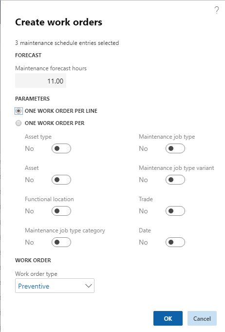

Erstellen von Arbeitsaufträgen
Important
Dynamics 365 for Finance and Operations hat sich zu speziell entwickelten Anwendungen entwickelt, mit denen Sie bestimmte Geschäftsfunktionen verwalten können. Weitere Informationen zu diesen Änderungen finden Sie im Dynamics 365-Lizenzierungshandbuch.
Wenn Sie vorbeugende Wartungsaufträge geplant haben, ist der nächste Schritt, Arbeitsaufträge für die Einzelvorgänge zu erstellen. Dies erfolgt in einem der Wartungszeitpläne. Die geplanten Einzelvorgänge in einem Wartungszeitplan können verschiedene Referenztypen haben:
| Referenztyp | Beschreibung |
|---|---|
| Wartungspläne | Vorbeugende Wartungsaufträge auf Grundlage der Wartungsplantypen „Zeit“ oder „Zähler“. |
| Wartungsdurchgänge | Vorbeugende Wartungsaufträge, die mehrere Anlagen enthalten, die einen ähnlichen Wartungstyp erfordern. |
| Wartungsanfrage | Manuell erstellte Anforderung für die Wartung oder Reparatur einer Anlage, die in einen Arbeitsauftrag konvertiert werden kann. |
Klicken Sie auf Anlagenverwaltung > Allgemein > Alle Wartungspläne oder Wartungszeitplanpositionen öffnen oder Wartungszeitplanpools öffnen.
Wählen Sie die geplanten Wartungsaufträge aus, für die Sie einen Arbeitsauftrag erstellen möchten, und klicken Sie auf Arbeitsauftrag. Im Dialog Arbeitsaufträge erstellen wird die Gesamtanzahl von Planungsstunden für die ausgewählten Positionen im Feld Wartungsprognosestunden angezeigt.
Im Abschnitt Parameter wählen Sie aus, wie viele Arbeitsaufträge erstellt werden sollen. Sie können einen Arbeitsauftrag pro Wartungszeitplanposition oder mehrere Arbeitsaufträge basierend auf Ihrer Auswahl im Abschnitt Ein Arbeitsauftrag pro erstellen.
Wählen Sie einen Arbeitsauftragstyp aus, der für alle Arbeitsaufträge verwendet wird, die Sie erstellen. In der folgenden Abbildung wird ein Beispiel des Dialogfelds Arbeitsaufträge erstellen angezeigt.

- Klicken Sie auf OK. Einer oder mehrere Arbeitsaufträge werden erstellt.